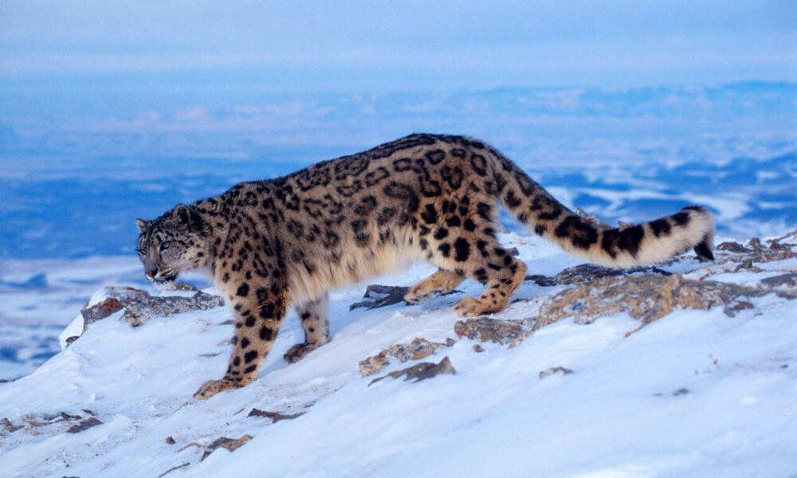
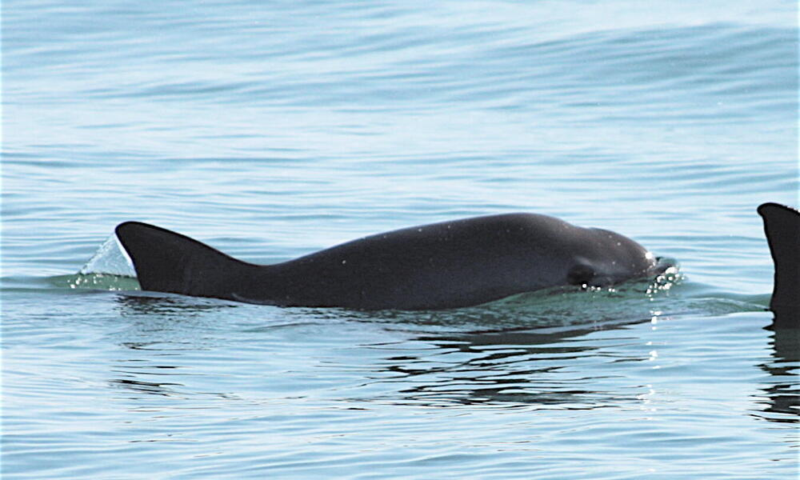
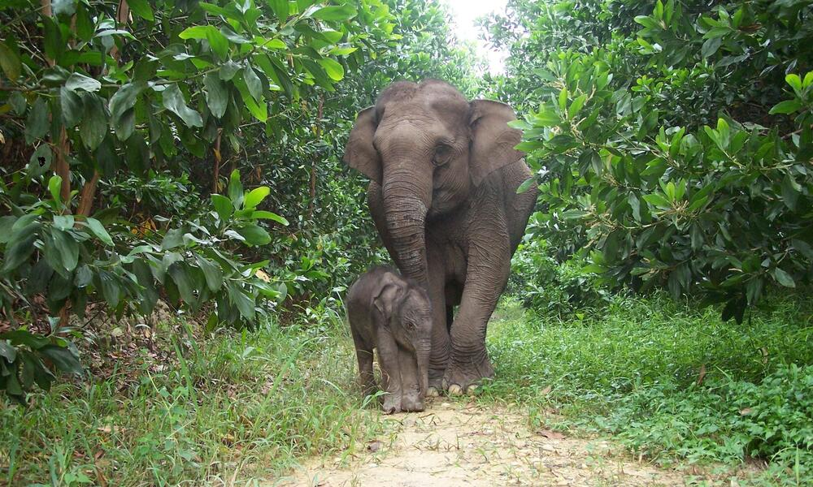
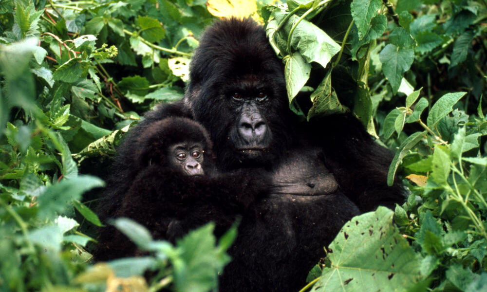
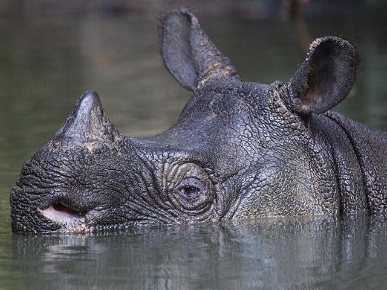
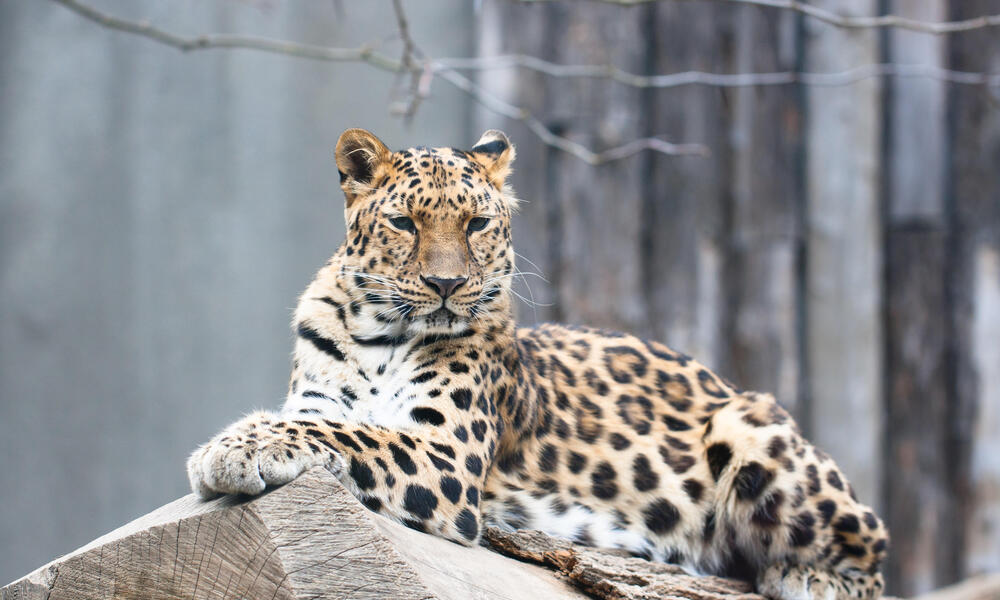

Bennett's Awareness Project
Millions of animals are on the brink of extinction. Learn about them, share their stories, and help bring them back.
Meet the Species ↓Welcome to Bennett's endangered species page. She is working to spread awareness about the species currently at risk — because understanding them is the first step toward saving them.
Click any card to reveal facts about each animal

Vulnerable

Critically Endangered

Critically Endangered

Endangered

Critically Endangered

Critically Endangered
Small actions add up to massive change
Share what you've learned. Awareness is the first step toward action.
worldwildlife.org — donate or adopt a species symbolically.
Buy sustainable products and reduce your environmental footprint.